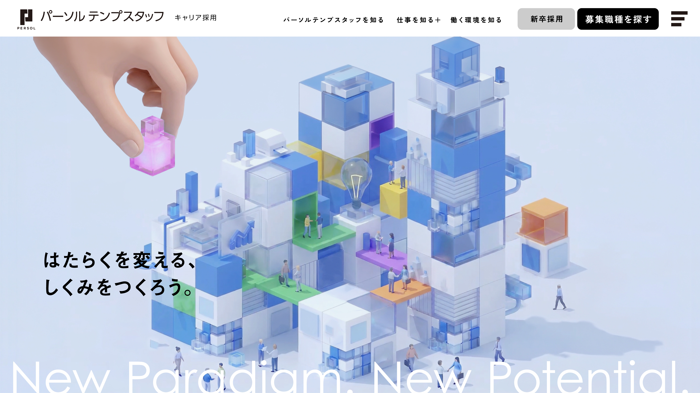

はたらくにまつわる不自由は、 根性論では解決できない。 必要なのは、人々の想いを汲みあげ、 しなやかに選択肢に変える「しくみ」だ。
無理だと言われた働き方が、あたらしいふつうになる。 埋もれていた可能性に、光が当たるようになる。 派手なニュースにはならなくても、 たしかに誰かのはたらく人生を軽やかにする 「社会インフラ」をつくること。 それが私たちにしかできない 可能性創造への挑戦だと考えています。
今日より先を生きる人々が あたりまえのように、はたらいて笑える世界をめざして。 あなたとともに「はたらく」のパラダイムシフトに挑む、 パーソルテンプスタッフです。